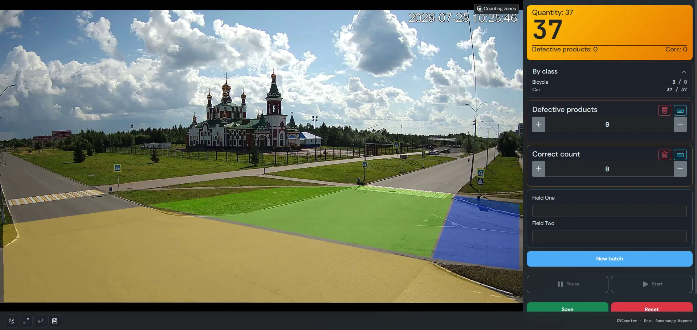

Lane-by-Lane Traffic Flow
Measure volume intensity of passenger cars, buses, and commercial transport separately across each roadway lane to study hourly congestion patterns.
Open-source computer vision for optical counting of cars, trucks, and buses crossing designated zones on roadways, intersections, facility entryways, and gate barriers. ByteTrack multi-object tracking, multi-lane polygons, and per-class tallies without cloud subscriptions.
Flexible polygonal zones enable reliable accounting of vehicular movement in any camera field of view.
Measure volume intensity of passenger cars, buses, and commercial transport separately across each roadway lane to study hourly congestion patterns.
Optical tally of vehicles passing through industrial perimeter gates, logistics depot ramps, or weigh station lanes per shift (Batch).
Bidirectional vehicle accounting: track how many vehicles cross entrance line zones and exit line zones over defined periods.

Discover why optical AI video analytics outperforms inductive pavement loops and cloud solutions.
| Feature | CVCounter (Vision AI) | In-Pavement Induction Loops | Cloud Traffic SaaS |
|---|---|---|---|
| Deployment | Zero roadwork or trenching | Asphalt cutting, lane closures | Proprietary camera setups |
| Vehicle Classification | Detailed (car, truck, bus, motorcycle) | Rough axle/length estimation only | Tiered billing per class |
| Data Security | 100% On-Premises, air-gapped ready | Local signal | Video leaves your perimeter |
| Reconfiguration | Redraw zones in 60s via web UI | Requires physical road re-sawing | Contact vendor support |
| Cost & Licensing | Open Source (AGPL-3.0), Free | $3,000–$10,000 per lane | Monthly subscription per feed |
Get started with real-time road surveillance in minutes.
Position an IP camera on a pole, gantry, or building facade angled 30°–60° toward oncoming traffic.
Add the RTSP stream URL in CVCounter. Supports H.264/H.265 streams at 720p or 1080p resolution.
Draw polygonal zones around each traffic lane, select target classes (car, truck, bus), and set confidence.
View live telemetry, record vehicle batches, and export CSV/JSON traffic reports or printable A4 sheets.
Common questions regarding vehicle counting and traffic analysis.
Out of the box, standard YOLO models classify passenger cars (car), freight haulers (truck), public buses (bus), and two-wheelers (motorcycle). Custom models can be trained for specialized equipment using the built-in annotation tool.
The vision system optically detects vehicles in video frames, tracks their trajectories using ByteTrack to assign consistent IDs, and increments counters when objects cross or enter user-drawn polygonal counting zones. This prevents double counting of queued or slow-moving traffic.
Yes. ByteTrack tracking combined with modern YOLO architectures handles challenging rain, snowfall, and headlight reflections. In low-light environments, low-light sensors or street lighting maintain high accuracy.
Yes. The interactive polygonal editor lets you position discrete detection zones for every highway lane, ramp, or turn lane, providing granular traffic distribution metrics.